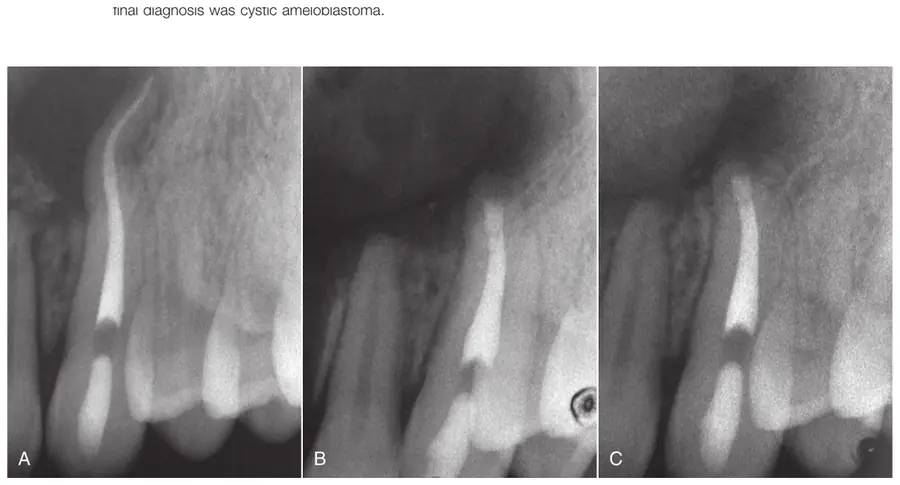
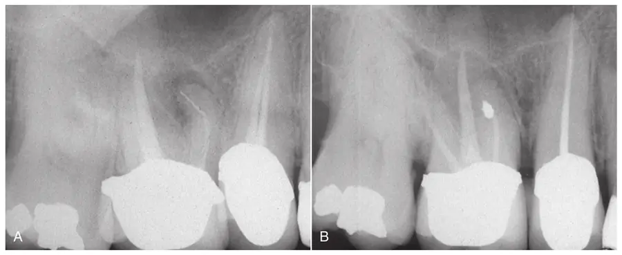

نسخه استخراجشده؛ ترجمه یا تأیید علمی انجام نشده است. وضعیت: captured
درناژ چه میکند؟ ترشحات چرکی یا خونی و ترانسودا و اگزودا را از کانون نکروز مایعشونده — یعنی آبسه — آزاد میکند. و درناژ آبسه، درد را کم میکند، گردش خون را بیشتر میسازد، و یک محرک قوی را حذف مینماید.

ولی یک هشدار: درناژ عفونت، علت عفونت را از بین نمیبرد، پس درمان قطعی دندان همچنان لازم است.
و دو راه درناژ آبسهی داخل استخوان:
و چه زمانی برش و درناژ اندیکاسیون دارد؟ اگر گسترش عفونت سریع باشد، اگر درگیری فضایی آشکار گردد، یا اگر باز کردن دندان از تاج چرک آشکاری بیرون ندهد.
و تصمیم دربارهی درن، بر چه پایهای است؟ بر پایهی اینکه حفرهی آبسه خودبهخود باز خواهد ماند یا نه. و عفونتهایی که به چند فضای مجاور گسترش یافتهاند اغلب گذاشتن درن را لازم میکنند؛ افزون بر این، اگر درناژ وابسته به ثقل برقرار نشود، باید درن در نظر گرفته شود.
و کشت و حساسیت، کِی؟ برش و درناژ به دندانپزشک اجازه میدهد نمونهی چرک بگیرد — ولی بیشتر عفونتهای اندودنتیک اکتسابی از جامعه به کشت و حساسیت نیاز ندارند، مگر آنکه بیمار از نظر پزشکی بهخطر باشد، به یک دورهی تجربی آنتیبیوتیک پاسخ نداده باشد، یا عفونت در محیط بیمارستانی کسب شده باشد که به شکلهای مقاوم به آنتیبیوتیک مستعد میکند.
و حالا خودِ جراحی پریاپیکال — هفت گام:
و یک نکتهی مهم دربارهی رضایت بیمار: مهم است پیش از عمل به بیمار گفته شود که جراحی اندودنتیک اکتشافی است. عمل جراحی دقیق، پس از آشکار و کاوش شدن محل، با یافتههای بالینی تعیین میشود.
برای نمونه: ممکن است شکستگی ریشه دیده شود، و تصمیم به رزکسیون ریشه یا کشیدن دندان باید حین عمل گرفته شود. پس بیمار باید پیش از عمل، رضایت برای کشیدن دندان را هم بدهد، اگر حین عمل ضروری تشخیص داده شود.
پس از پایان درمان ریشه، علائم مرتبط با دندان میتوانند به توصیهی جراحی پریاپیکال بینجامند. شایعترین حالت، فیستول مزمن و درناژ است. و سایر نشانهها میتوانند شامل درد و شروع ناگهانی عفونت فضای وستیبولار باشند. همچنین یافتههای اتفاقی یک ناحیهی رادیولوسنت رو به افزایش در رادیوگرافیهای معمول هم میتوانند به تصمیم درمان جراحی بینجامند.

و شش اندیکاسیون رسمی جراحی پریاپیکال:
و اگر علت شکست شناسایی نشود؟ وقتی بازدرمان اغلب ممکن نیست یا نتیجهی بهتری با رویکرد تاجی بهدست نمیآید، و اگر علت شکست قابل شناسایی نباشد، کاوش جراحی میتواند ضروری شود.
و حالا سمت دیگر — کنتراندیکاسیونها و احتیاطها:
و یک ملاحظهی راهبردی: اعمال بیشتر روی دندان، چه بازدرمان ارتوگرید و چه جراحی پریاپیکال، میتوانند میزان موفقیت بلندمدت دندان را کم کنند، چون هر درمان با برداشتن ساختار بیشتری از دندان همراه است.
و دربارهی گزینهی ایمپلنت: گزینههای درمانی دیگر مانند کشیدن دندان و گذاشتن ایمپلنت میتوانند ترجیح داده شوند و با میزان موفقیت بلندمدت بالاتری همراهاند. ولی یک کنفرانس اجماع نتیجه گرفت که درمان اندودنتیک و اعمال ایمپلنت به یک اندازه موفق شمرده میشوند.
و آنتیبیوتیک پیش از جراحی: یک ساعت پیش از جراحی داده میشود، و نیاز به دوز پس از عمل بهروشنی تعریف نشده و ممکن است برای بیمار سودی نداشته باشد. و کورتیکواستروئید حینعمل میتواند ادم را کم و بهبود را تسریع کند، ولی مصرفش میتواند خطر عفونت را بالا ببرد، پس آنتیبیوتیک پروفیلاکتیک ممکن است لازم شود.
و پس از جراحی: تعیین نهایی موفقیت — مثلاً اینکه ترمیم نهایی کی گذاشته شود — اغلب بر عهدهی دندانپزشک ارجاعدهنده است.